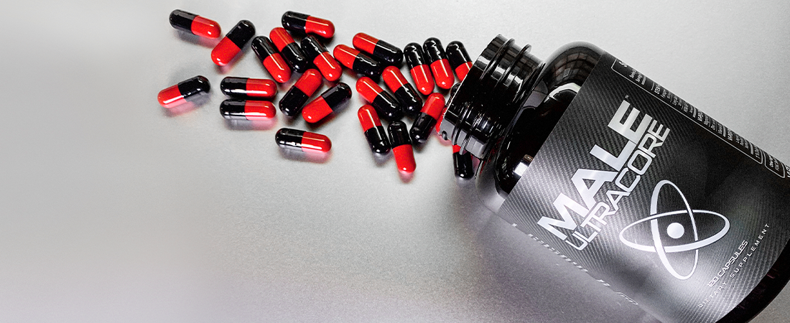

Written By: Jeff Bronson

Male UltraCore Price – A Great Deal for Male Enhancement
Male UltraCore is a male enhancement supplement with a lot of good reviews. It talks about enlarged penis size, enhanced sexual desire, and energy that got me curious. I am now in my mid-years and noticed low tolerance to stress, low energy, and even poor sexual drive.
Trying other supplements didn't work, and was about to give up, but Male UltraCore rejuvenated me. First, let me talk about the benefits of Male UltraCore.
Enlarges penis size for fuller, harder, and forceful erections
Longer endurance for complete sex satisfaction even over 40
Boosts the body's metabolism for better health
Enhances stamina for better sex sessions
Resolves sexual issues, such as premature ejaculation, low semen volume, low energy, and erectile dysfunction
Increases testosterone for improved performance in the bedroom
Rebuilds confidence
Enhances staying power
Keeps you active and healthy
Mood enhancer so you won't have to deal with stress, depression, or anxiety
Helps you match the sexual desire of your partner who is between the ages of 20 to 30is
How Much is Male UltraCore
To give you the assurance of getting the authentic product, Male UltraCore is available only in UltraCorePower.com MaleUltraCore.com, and our Male UltraCore Amazon store, their exclusive distribution channels.To order, just call 1-800-912-5055 (toll-free) or fill-up the form on the website. Amazing discounts are available when ordering from these distribution channels.
You can also take advantage of their special packages, such as: Elite – Male UltraCore is $79.95 for a savings of $2.66 per day. It includes free standard shipping with no tax.Elite Plus – Male UltraCore and Ultra Prime, the price is $99.95 giving you a savings of $3.33 per day with free shipping with no tax.Ultimate – Male UltraCore and Ultra Prime and Ultra Edge, priced at $119.95. You save $3.99 per day and includes free express shipping with no tax.If you are not completely satisfied after three months, you can ask for a refund with no questions asked. I doubt, however, if you'll request for a refund. Male UltraCore does not make promises, it WORKS!
Male UltraCore Dosage
The recommended dose is four capsules in the morning before breakfast. You absorb the ingredients completely if you take Male UltraCore on an empty stomach. Don't worry, it does not cause stomach upset. Your second dose is two capsules before dinner. Follow the recommended dosage and take the capsule regularly for better and reliable outcomes.
Male UltraCore – A Scam?
No, Male UltraCore is not a scam. There will be a few who'll say negative things about this product, but nothing can put it down. Male UltraCore is developed to improve the body's entire metabolic rate. There is a deluge of male enhancement products but most of these are fake or made from chemicals that are harmful to the body. Don't waste your money on these supplements. Regardless if you are in your 20s, 30s, or 40s and over, Male UltraCore delivers results, making it the #1 male enhancement supplement on the market. Furthermore, this male enhancer works not only for you but also offers the maximum level of sexual satisfaction to your partner.
The Exclusivity of Male UltraCore Technology
Male UltraCore is completely organic, comprising of natural ingredients used in traditional and ancient medicine for sexual, fertility, and health issues. Moreover, it uses modern process technologies to fortify its efficacy.Maca root is a dynamic ingredient that enhances the body's metabolism. It increases sexual desire and allows you to work effectively.L-Arginine helps improve blood circulation. Your dick needs a good amount of flow for it to have a good erection. This essential amino acid also helps reduce stress and tiredness.Longjack extract is a well-known herbal plant that increases libido and helps prevent premature ejaculation.ZMA is a mixture of Zinc and Magnesium Aspartate. It helps sustain the production of testosterone and helps in muscle recovery, as well as improve the quality of sleep.VI-PEX and STEM technologies were used to develop Male UltraCore. The application of VI-PEX technology helps increase vasodilation for better erection time land quality.STEM technology helps improve blood flow for a healthier build. These two cutting-edge technologies are designed to give you more energy and strength.
Side Effects?
As mentioned, the Male UltraCore male enhancement supplement is fully organic and all-natural. It is completely safe and is not harmful to your body. There are no additives or synthetic elements in this product. It is recommended, however, to visit your doctor if you have an allergy or on prescribed medications.
My Verdict
Male UltraCore male enhancement supplement is beneficial for your overall health. It gives you complete sex satisfaction and maintains lean muscles at a very affordable price.
FTC Disclosure: The information contained within this site is not intended as a substitute for professional medical advice. If you have, expect to have, or suspect you may have any medical condition, you are urged to consult with a health care provider. These statements have not been evaluated by the Food and Drug Administration. These products are not intended to diagnose, treat, cure or prevent any diseases or medical conditions. ismaleultracoresafe.com is an affiliate branch of Male Ultracore and its subsidiaries. Links contained in this review to maleultracore.com and other affiliated subsidiaries and any subsequent sales thereafter generate revenue for the collective enterprise.